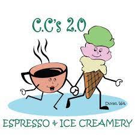

C.C.'s was purchased by Cindy in 2015, and we're still going strong seven years later!
This is a local mom-and-pop store with loads of handmade goodies and ice cream straight from Cascade Glacier in Eugene, Oregon.
We love getting involved with our community by promoting local events, providing a venue for local artists to sell their wares, and partnering with local businesses to provide special treats. We also open up our parlor to events such as the Duvall Chamber Halloween Downtown Trick or Treat.
You'll often find Cindy getting involved behind the counter with the rest of her team just to say hi. Our employees are the kindest and more enthusiastic group of Duvallian ice cream scoopers and latte-makers you'll ever see.
We have a lovely location where customers can walk down to the river with their ice cream on a hot day, or browse the connected antiques store and our own collection of 1950s retro trinkets. Or, take a seat on the small patio out back or under the umbrellas in front off Main Street.
We love being a vital part of our community, and were proud to be chosen by Best Things Washington in 2022 as one of the nine best ice cream parlors in Washington state.
